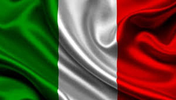
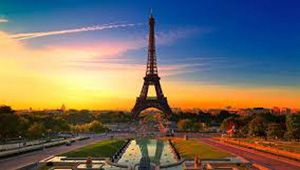

Страны Евросоюза |
|||
|---|---|---|---|
| Государства-члены Европейского союза — это страны, являющиеся членами Европейского союза, целью которого является интеграция европейских государств, заключающаяся в едином экономическом рынке, отсутствии паспортно-визового контроля, использовании общей валюты. Членом ЕС может стать страна, соответствующая Копенгагенским критериям. C 1 июля 2013 года в союз входят 28 государств. | |||
| ЭСТОНИЯ | ФРАНЦИЯ | НИДЕРЛАНДЫ | ИТАЛИЯ |
|  | |||
| Эстония — прибалтийское государство, входящее в Евросоюз и граничащее с Россией. Приехать в Эстонию легко — на поезде, самолете, автомобиле или пароме. Гражданам России необходимо оформлять в Шенгенскую визу для поездки в Эстонию. Эстония полностью охвачена сетями мобильной связи, а в городских центрах есть много зон беспроводного Интернета, в том числе бесплатных. Большинство магазинов, банков и ресторанов работают и в государственные праздники, за исключением 25 декабря и 1 января, когда почти все коммерческие предприятия закрыты. Обязательно заходите в местные центры туристической информации, чтобы получить совет, взять карту или просто пообщаться с дружелюбным работником: местные специалисты по туризму помогут Вам спланировать интересные маршруты, предложат увлекательные занятия и вообще постараются сделать Ваше пребывание в Эстонии как можно более насыщенным приятными впечатлениями. | «Лучше Франции пока ничего не придумано» — эта нахальная, если не сказать резче, фраза де Голля так и напрашивается на суровое опровержение, хотя бы в масштабах Европы. Наверняка же у сопредельных стран найдется, чем уесть заносчивых лягушатников! Взять, к примеру, знаменитые фахверковые дома Германии. Что? В Эльзасе такие же? Гм, действительно. Ладно, смотрим на соседнюю Бельгию с ее особым шармом ухоженной деревни, аутентичной картошкой фри и «винным» пивом... Что? Все это найдется и во Нор-Па-де-Кале? Черт, в самом деле так. Ну хорошо, но уж чисто британским-то фишкам — туманам с Гольфстрима, красным телефонным будкам, плетистым розам на крупнокаменных стенах деревенских домов и вересковым пустошам с исполинской галькой обкатанных ледниками валунов — им-то во Франции взяться точно неоткуда? И снова мимо: в не столь знаменитой, как Париж или Ницца, но милой сердцу многих путешественников Бретани всего этого едва ли не больше, чем в Англии. Если же говорить о южных соседях, то поклонники Италии почувствуют себя как дома в солнечном Провансе, а Испании — в горах Пиренеев и на сухих равнинах Лангедока. | Самые распространенные ассоциации, возникающие при слове Нидерланды, — старинные мельницы, красочные тюльпаны, «лигалайз» марихуаны, улица Красных фонарей и забавные деревянные башмаки. На самом деле Нидерланды — намного больше, чем перечисленные стереотипы. Это одно из самых живописных государств Западной Европы с необычной природой, множеством замков и древними городами. Несмотря на то, что туры в Голландию недешевы из-за дороговизны перелета и размещения, отели в Амстердаме очень часто переполнены. Туда едут немало людей среднего возраста — от 30 лет и старше. Плюс богатая молодежь, у которой Нидерланды неизменно пользуются высокой популярностью — ведь эта страна ассоциируется у них с запахом свободы, впрочем, очень похожим на запах «травки». | Италии грех жаловаться на недостаток внимания туристов — и зимой, и, в особенности, летом. Каждый сезон миллионы отдыхающих с энтузиазмом штурмуют знаменитый «сапог», находя для этого немало веских причин: действительно шикарную и сверхнасыщенную «экскурсионку», чистое теплое море, хорошие пляжи и красивую природу. Путешественников не отпугивают даже сравнительно высокие цены на отдых по-итальянски и достаточно аскетичное оснащение большинства городских отелей. Впрочем, к прибрежным гостиницам это замечание обычно не относится. Еще один пункт итальянской программы — весьма качественное, хоть и недешевое, лечение на термальных курортах. |
| Столицы Стран Евросоюза | |||
| ТАЛЛИНН | ПАРИЖ | АМСТЕРДАМ | РИМ |
|  | |||
| Таллинн — сравнительно небольшой, но богатый историческими и культурными достопримечательностями город на южном берегу Финского залива. Собираясь посетить эстонскую столицу, лучше заранее спланировать культурную программу. Чтобы осмотреть все туристические объекты понадобится немало времени — только по улочкам Старого города можно проходить целый день. Старый Таллинн — настоящий островок средневековья посреди ультрасовременных высотных зданий гостиниц и торговых центров. Хотя неповторимая атмосфера, царящая в историческом центре, считается его главной особенностью, туристов сюда влекут не только древние крепостные стены. Местоположение на Балтийском побережье располагает к прогулкам по живописным набережным. Даже несмотря на прохладное и непродолжительное лето, в Таллинне неплохо развит пляжный отдых. Кроме того, почти круглый год в городе проходят многочисленные праздники и фестивали. | Описывать Париж по большом счету бессмысленно. Не потому, что писать не о чем — боже упаси! Просто этот город как ни один город в мире не хочет укладываться в рамки и соответствовать стереотипам. Конечно, всякий слышал об утреннем кофе с круассанами, вечерних бистро с шумными столиками, запахе жареных каштанов на парижских бульварах... но для кого-то Париж — это гулкий полумрак Нотр-Дама, тихий шепот туристов в залах Лувра и почти безлюдный, застроенный старинными особняками остров Сен-Луи. Для кого-то столица Франции — прежде всего Эйфелева башня, памятник «эпохе пара и электричества», а современные архитекторы отправляются в Париж, чтобы вдохновиться авангардными линиями квартала Дефанс и башни Монпарнас. "Париж — это настоящий океан. Бросьте в него лот, и все же глубины его вам не узнать." Оноре де Бальзак. Париж одновременно элитарен и демократичен, весел и грустен, ярок и слегка размыт дождями, как на картинах Писарро — и у каждого он свой. А чтобы открыть Париж для себя, влюбиться в него и оставить в нем частичку души, нужно не так уж и много — просто в нем побывать. |
Банальность, но факт: Амстердам удивительный. Кажется, что здесь на каждом шагу тебя должно встречать доброе облако ароматного дыма, из красноватых окон нахально подмигивать слегка одетые женщины, а по улицам города гулять сплошь «фрики» и чудаки со всей Европы. Словом, разврат и порок. А на деле — малые голландцы, палитра Ван Гога, поля тюльпанов, идиллические каналы и сноровисто подрезающие туристов местные бабули на велосипедах. Чудо? Нет — это Амстердам, он донельзя разный, но всегда твой. Хочется развлечений — иди на Лейдсеплейн. Строгий традиционалист и фанат Брейгеля — тебе в Музейный квартал. Нежная поклонница суккулентов и луковичных? Да ради Бога: вот и Кёкенхоф, и цветочный рынок. Амстердам никого не обидит, но всех очарует. | Вечный город, куда ведут все дороги, где можно прожить всю жизнь за одни каникулы длиной в день или потеряться на несколько недель. Концентрация достопримечательностей в Риме достигает таких величин, что всего через пару часов в этом городе сердце и мозг бедного туриста начинают отказываться вмещать новые. Поэтому провести в Риме день-два — просто преступление. Сюда можно приезжать и приезжать, и приезжать. Главное — отдавать себе отчет в том, что Рим — это не Италия. Считайте, что это отдельное государство или даже отдельный мир. Рим чудовищно стар и навсегда молод, он видел расцвет и падение одной из величайших цивилизаций планеты. Неудивительно, что весь его исторический центр объявлен объектом Всемирного наследия человечества. | ЭСТОНИЯ | ФРАНЦИЯ | НИДЕРЛАНДЫ | ИТАЛИЯ |